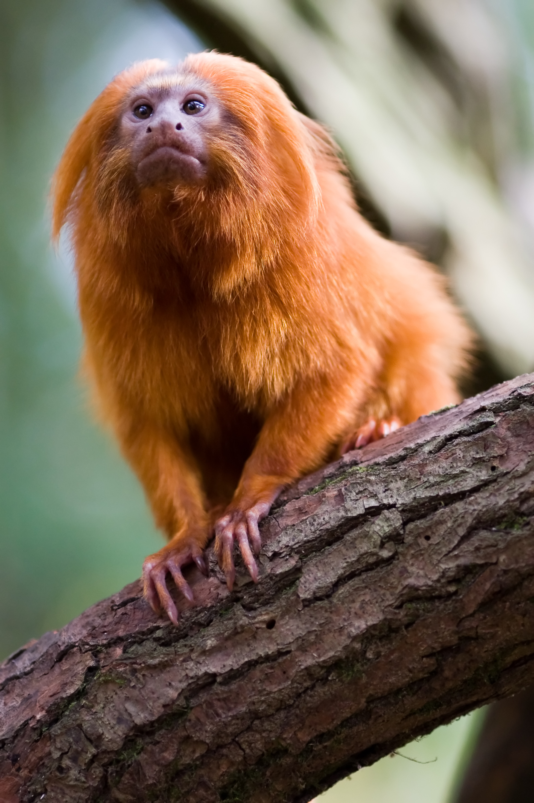

Cabeçalho
Menu
Página
Lado
| 1º-MACACO A EXISTIR | 1º- MACACO A IMPLANTAR O SISTEMA DE IMPOSTO DE RENDA | MACACO MAIS FOFO UWU |
| UNICO MACACO QUE SABE USAR MAQUITA | FUN FACT: ELE NÃO É FEITO DE OURO, APESAR DE TER DOURADO EM SEU NOME | U U U A A A |
Rodapé
Medianeira.